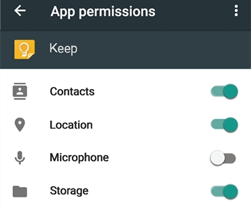
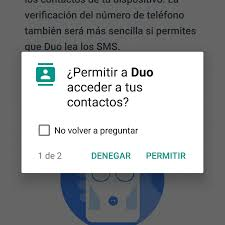
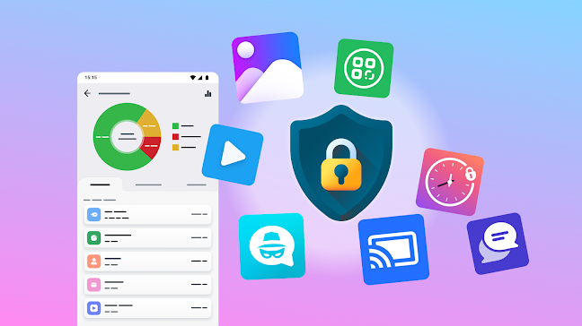

Permisos de Aplicaciones
En Android, las aplicaciones requieren permisos explícitos para acceder a recursos o datos sensibles del sistema, como la cámara, la ubicación o los contactos. Android maneja dos tipos de permisos:
- Permisos normales:Estos permisos no representan un riesgo para la seguridad y generalmente son concedidos sin intervención del usuario. Ejemplos de permisos normales incluyen el acceso a la red o al almacenamiento. 
- Permisos peligrosos:Estos permisos implican el acceso a datos o funciones sensibles que podrían afectar la privacidad o la seguridad del usuario, como la ubicación, los contactos, el micrófono o la cámara. Android 6.0 (Marshmallow) introdujo un sistema de permisos en tiempo de ejecución, donde el usuario debe otorgar explícitamente el permiso cuando la aplicación lo solicita por primera vez. 
Es importante que los usuarios revisen y gestionen los permisos de sus aplicaciones para asegurarse de que las aplicaciones solo tienen acceso a los recursos que realmente necesitan. Android permite a los usuarios controlar los permisos directamente desde la configuración del dispositivo.
Elaborado por Leonardo Choez